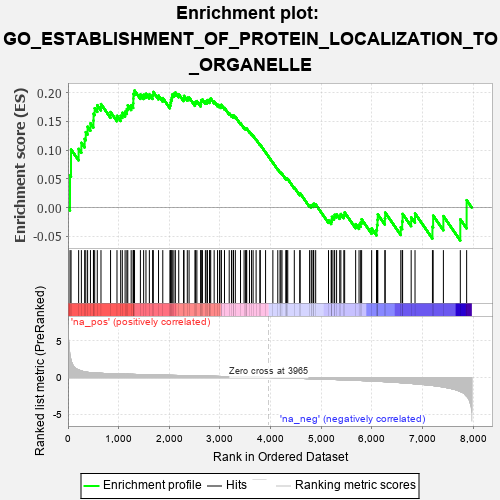

| | | Dataset | 7d |
| Phenotype | NoPhenotypeAvailable |
| Upregulated in class | na_pos |
| GeneSet | GO_ESTABLISHMENT_OF_PROTEIN_LOCALIZATION_TO_ORGANELLE |
| Enrichment Score (ES) | 0.20350805 |
| Normalized Enrichment Score (NES) | 0.8717059 |
| Nominal p-value | 0.84615386 |
| FDR q-value | 0.8622374 |
| FWER p-Value | 1.0 |
Table: GSEA Results Summary

Fig 1: Enrichment plot: GO_ESTABLISHMENT_OF_PROTEIN_LOCALIZATION_TO_ORGANELLE
Profile of the Running ES Score & Positions of GeneSet Members on the Rank Ordered List
| PROBE | GENE SYMBOL | GENE_TITLE | RANK IN GENE LIST | RANK METRIC SCORE | RUNNING ES | CORE ENRICHMENT | | 1 | SIX2 | | | 40 | 3.152 | 0.0561 | Yes |
| 2 | RAC2 | | | 60 | 2.442 | 0.1011 | Yes |
| 3 | RHOU | | | 210 | 1.031 | 0.1022 | Yes |
| 4 | COX18 | | | 264 | 0.890 | 0.1127 | Yes |
| 5 | NUP85 | | | 329 | 0.772 | 0.1195 | Yes |
| 6 | GSK3A | | | 351 | 0.745 | 0.1313 | Yes |
| 7 | BAX | | | 387 | 0.711 | 0.1407 | Yes |
| 8 | SUFU | | | 443 | 0.665 | 0.1466 | Yes |
| 9 | NXT2 | | | 502 | 0.628 | 0.1514 | Yes |
| 10 | NUP54 | | | 505 | 0.627 | 0.1633 | Yes |
| 11 | HTRA2 | | | 527 | 0.621 | 0.1727 | Yes |
| 12 | MX1 | | | 578 | 0.604 | 0.1780 | Yes |
| 13 | TNPO3 | | | 651 | 0.576 | 0.1800 | Yes |
| 14 | SGF29 | | | 840 | 0.521 | 0.1662 | Yes |
| 15 | ZPR1 | | | 967 | 0.491 | 0.1596 | Yes |
| 16 | AKT1 | | | 1040 | 0.476 | 0.1597 | Yes |
| 17 | AIFM1 | | | 1072 | 0.469 | 0.1648 | Yes |
| 18 | NUP93 | | | 1127 | 0.459 | 0.1669 | Yes |
| 19 | UBL5 | | | 1162 | 0.452 | 0.1713 | Yes |
| 20 | TFDP1 | | | 1180 | 0.450 | 0.1779 | Yes |
| 21 | SRP68 | | | 1247 | 0.439 | 0.1780 | Yes |
| 22 | PEX3 | | | 1287 | 0.432 | 0.1814 | Yes |
| 23 | PARL | | | 1290 | 0.432 | 0.1895 | Yes |
| 24 | DKC1 | | | 1292 | 0.431 | 0.1978 | Yes |
| 25 | PEX5 | | | 1313 | 0.427 | 0.2035 | Yes |
| 26 | NUP88 | | | 1429 | 0.404 | 0.1967 | No |
| 27 | SPCS2 | | | 1493 | 0.391 | 0.1962 | No |
| 28 | SEC62 | | | 1539 | 0.385 | 0.1980 | No |
| 29 | SRP14 | | | 1606 | 0.373 | 0.1968 | No |
| 30 | ACOX3 | | | 1670 | 0.361 | 0.1958 | No |
| 31 | TNPO1 | | | 1684 | 0.359 | 0.2011 | No |
| 32 | NUP58 | | | 1787 | 0.340 | 0.1947 | No |
| 33 | NUP62 | | | 1871 | 0.324 | 0.1904 | No |
| 34 | DNLZ | | | 2012 | 0.303 | 0.1784 | No |
| 35 | DMAP1 | | | 2025 | 0.301 | 0.1828 | No |
| 36 | VPS25 | | | 2033 | 0.300 | 0.1877 | No |
| 37 | GOSR2 | | | 2050 | 0.298 | 0.1915 | No |
| 38 | PEX2 | | | 2056 | 0.298 | 0.1966 | No |
| 39 | SRP72 | | | 2090 | 0.292 | 0.1981 | No |
| 40 | SNF8 | | | 2119 | 0.288 | 0.2001 | No |
| 41 | SYK | | | 2186 | 0.278 | 0.1971 | No |
| 42 | AIP | | | 2281 | 0.263 | 0.1902 | No |
| 43 | ECH1 | | | 2290 | 0.261 | 0.1942 | No |
| 44 | OXA1L | | | 2355 | 0.252 | 0.1910 | No |
| 45 | SAE1 | | | 2390 | 0.247 | 0.1914 | No |
| 46 | HUWE1 | | | 2506 | 0.225 | 0.1812 | No |
| 47 | NUMB | | | 2519 | 0.224 | 0.1840 | No |
| 48 | SRP54 | | | 2544 | 0.220 | 0.1852 | No |
| 49 | BAG3 | | | 2620 | 0.209 | 0.1797 | No |
| 50 | NUP50 | | | 2625 | 0.209 | 0.1832 | No |
| 51 | GNPAT | | | 2629 | 0.208 | 0.1869 | No |
| 52 | VPS4A | | | 2654 | 0.205 | 0.1878 | No |
| 53 | PHB2 | | | 2712 | 0.197 | 0.1844 | No |
| 54 | LMAN1 | | | 2743 | 0.192 | 0.1843 | No |
| 55 | AGK | | | 2752 | 0.191 | 0.1870 | No |
| 56 | ECI2 | | | 2794 | 0.184 | 0.1853 | No |
| 57 | ATR | | | 2800 | 0.183 | 0.1882 | No |
| 58 | SRP19 | | | 2817 | 0.181 | 0.1897 | No |
| 59 | PDCD5 | | | 2885 | 0.169 | 0.1844 | No |
| 60 | RAB10 | | | 2952 | 0.157 | 0.1791 | No |
| 61 | PEX1 | | | 2990 | 0.151 | 0.1773 | No |
| 62 | BRCA2 | | | 3024 | 0.146 | 0.1759 | No |
| 63 | SEC63 | | | 3025 | 0.146 | 0.1787 | No |
| 64 | CHP1 | | | 3089 | 0.138 | 0.1734 | No |
| 65 | RBM22 | | | 3182 | 0.125 | 0.1641 | No |
| 66 | PEX10 | | | 3227 | 0.117 | 0.1607 | No |
| 67 | NUP98 | | | 3261 | 0.112 | 0.1587 | No |
| 68 | MIPEP | | | 3266 | 0.111 | 0.1603 | No |
| 69 | SMAD3 | | | 3303 | 0.105 | 0.1578 | No |
| 70 | MED1 | | | 3405 | 0.089 | 0.1466 | No |
| 71 | HGS | | | 3476 | 0.080 | 0.1393 | No |
| 72 | UFM1 | | | 3506 | 0.077 | 0.1371 | No |
| 73 | UBR5 | | | 3518 | 0.074 | 0.1371 | No |
| 74 | HDAC3 | | | 3528 | 0.072 | 0.1374 | No |
| 75 | LRWD1 | | | 3582 | 0.063 | 0.1318 | No |
| 76 | NOLC1 | | | 3623 | 0.056 | 0.1278 | No |
| 77 | FIS1 | | | 3654 | 0.051 | 0.1250 | No |
| 78 | NF1 | | | 3713 | 0.040 | 0.1183 | No |
| 79 | SRPRA | | | 3788 | 0.029 | 0.1095 | No |
| 80 | SPCS1 | | | 3795 | 0.028 | 0.1092 | No |
| 81 | NIPBL | | | 3900 | 0.010 | 0.0962 | No |
| 82 | SGTB | | | 4044 | -0.015 | 0.0782 | No |
| 83 | HMGCL | | | 4141 | -0.031 | 0.0666 | No |
| 84 | AP2B1 | | | 4185 | -0.039 | 0.0619 | No |
| 85 | VPS11 | | | 4202 | -0.041 | 0.0606 | No |
| 86 | VTI1A | | | 4224 | -0.046 | 0.0588 | No |
| 87 | RAN | | | 4299 | -0.059 | 0.0506 | No |
| 88 | BAG4 | | | 4314 | -0.061 | 0.0500 | No |
| 89 | ROMO1 | | | 4320 | -0.063 | 0.0506 | No |
| 90 | AMACR | | | 4338 | -0.066 | 0.0497 | No |
| 91 | LRRK2 | | | 4467 | -0.087 | 0.0351 | No |
| 92 | MPV17 | | | 4575 | -0.112 | 0.0236 | No |
| 93 | VPS28 | | | 4582 | -0.114 | 0.0250 | No |
| 94 | SRPRB | | | 4769 | -0.151 | 0.0043 | No |
| 95 | TERT | | | 4801 | -0.157 | 0.0033 | No |
| 96 | FBXW7 | | | 4816 | -0.161 | 0.0047 | No |
| 97 | VPS36 | | | 4845 | -0.167 | 0.0044 | No |
| 98 | DHRS4 | | | 4851 | -0.168 | 0.0070 | No |
| 99 | CLU | | | 4889 | -0.174 | 0.0057 | No |
| 100 | IPO7 | | | 5142 | -0.236 | -0.0219 | No |
| 101 | SMO | | | 5195 | -0.247 | -0.0237 | No |
| 102 | IPO5 | | | 5207 | -0.248 | -0.0203 | No |
| 103 | ATM | | | 5210 | -0.249 | -0.0157 | No |
| 104 | IDE | | | 5252 | -0.258 | -0.0159 | No |
| 105 | CDK1 | | | 5264 | -0.262 | -0.0123 | No |
| 106 | RAB7A | | | 5302 | -0.271 | -0.0117 | No |
| 107 | ACOT8 | | | 5364 | -0.288 | -0.0139 | No |
| 108 | FZD5 | | | 5386 | -0.292 | -0.0109 | No |
| 109 | CBLB | | | 5445 | -0.306 | -0.0124 | No |
| 110 | ACOX2 | | | 5461 | -0.310 | -0.0083 | No |
| 111 | CASP8 | | | 5678 | -0.369 | -0.0286 | No |
| 112 | MX2 | | | 5745 | -0.390 | -0.0295 | No |
| 113 | VAMP7 | | | 5777 | -0.399 | -0.0257 | No |
| 114 | LAMP1 | | | 5796 | -0.404 | -0.0201 | No |
| 115 | GCC2 | | | 5994 | -0.470 | -0.0361 | No |
| 116 | UBB | | | 6090 | -0.503 | -0.0385 | No |
| 117 | AP3M1 | | | 6100 | -0.506 | -0.0298 | No |
| 118 | ATG13 | | | 6110 | -0.508 | -0.0211 | No |
| 119 | PEX12 | | | 6115 | -0.510 | -0.0117 | No |
| 120 | PEX13 | | | 6255 | -0.557 | -0.0186 | No |
| 121 | AP3D1 | | | 6261 | -0.558 | -0.0084 | No |
| 122 | PEX19 | | | 6569 | -0.693 | -0.0341 | No |
| 123 | TPR | | | 6597 | -0.709 | -0.0238 | No |
| 124 | PEX6 | | | 6605 | -0.713 | -0.0108 | No |
| 125 | NXT1 | | | 6774 | -0.797 | -0.0167 | No |
| 126 | VPS41 | | | 6850 | -0.841 | -0.0100 | No |
| 127 | TSPO | | | 7194 | -1.065 | -0.0330 | No |
| 128 | MFN2 | | | 7208 | -1.081 | -0.0137 | No |
| 129 | UBC | | | 7410 | -1.274 | -0.0146 | No |
| 130 | RNF31 | | | 7744 | -1.895 | -0.0202 | No |
| 131 | CALM3 | | | 7869 | -2.525 | 0.0130 | No |
Table: GSEA details [plain text format]
 Fig 2: GO_ESTABLISHMENT_OF_PROTEIN_LOCALIZATION_TO_ORGANELLE: Random ES distribution
Fig 2: GO_ESTABLISHMENT_OF_PROTEIN_LOCALIZATION_TO_ORGANELLE: Random ES distribution
Gene set null distribution of ES for GO_ESTABLISHMENT_OF_PROTEIN_LOCALIZATION_TO_ORGANELLE